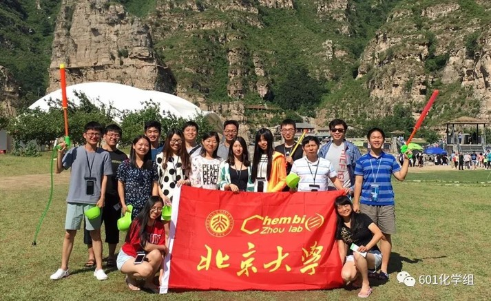

北京大学天然药物及仿生药物国家重点实验室是我国首批建立的国家重点实验室。本室将建设世界一流大学/一流学科的目标与满足国家创新药物重大需求相结合，基于北京大学多学科综合优势，以药学学科为龙头，以化学、生物、基础及临床等相关学科为依托，通过多学科交叉研究探索药物的源头发现，从而发展成为药学学科的创造、培育及引领中心。
课题组带头人简介：
周德敏教授，天然药物与仿生药物国家重点实验室主任、北京大学药学院院长、北京大学宁波海洋药物研究院院长；教育部长江学者、基金委创新群体牵头科学家、科技部973首席科学家、“万人计划”科技创新领军人才。长期从事基于化学-生物学交叉研究的新药发现新技术、新方法研究，目前主要聚焦在病毒和细胞膜蛋白动态修饰介导的免疫治疗和基因治疗新策略、内源性大分子定点修饰的成药性研究等方向，先后牵头国家973、创新药物专项、基金委重点、重大和国际合作基金等项目；在Science等杂志发表论文百余篇，十多项专利进入开发阶段；疫苗研究成果获评“中国科学十大进展”、“国际疫苗学会年度论文”等。
课题组详情请见：
http://sklnbd.bjmu.edu.cn/k/e/action/ListInfo/?classid=19
招收人数：
2人
研究领域：
1. 靶向病毒膜蛋白的抗病毒药物小分子及作用机制的研究
2. 困扰蛋白药物定点修饰成药性的关键技术的研究
3. 新型BMI抑制剂抗肿瘤干细胞作用靶点的发现、确证及应用的研究
岗位职责：
在课题组长指导下开展科研工作，同时协助导师申报基金及培养研究生
应聘条件：
1. 已获得博士学位（一般不超过两年）或即将毕业的博士。
2. 具有药物化学、有机化学或化学生物学等相关领域的研究经历，熟悉计算机辅助药物设计的方法（非必需），能独立开展相关课题的研究工作。
3. 热爱科研，能吃苦耐劳，有较强的责任心、组织协调及团队合作精神；具有良好的英语阅读、沟通及写作能力，以第一作者在本领域主流刊物发表过论文。
4. 符合北京大学医学部有关博士后管理规定。相关规定网页：https://postdocs.bjmu.edu.cn/
福利待遇：
北京大学医学部拥有优秀的学科、师资资源和科研平台，近年通过拓宽经费渠道、增加名额、大幅提高了博士后待遇，通过加强过程管理和评优等方式鼓励博士后多出优秀成果。
1. 薪酬福利：
普通全职博士后税前年收入约21万元（含单位公积金），博雅博士后税前年收入约27万元（含单位公积金）；2年考核评估优秀继续在站的基本年薪提高2万元。合作导师为优秀博士后发放项目酬金。
2. 住房：博士后按照进站入职时间可排队申请博士后公寓，租住公寓者按照市场价缴纳房租。
3. 基金申请：充分考虑博士后未来发展及职业规划，鼓励并支持博士后以项目负责人身份申请各类研究项目，如“博新计划”以及国家自然科学基金青年基金、中国博士后科学基金等。提供参加国内外高水平学术会议机会。
4. 其他待遇：包括社会保险、公费医疗、公积金等，按照学校博士后的规章制度执行。
应聘程序：
1. 有意者请将个人简历（PDF文档）、表明申请人科研能力和学术水平的成果证明（获奖、科研经历及发表的学术论文、工作设想）及两名本学科领域专家推荐信（其中一位应是申请人的博士导师）发送至：slxiao@bjmu.edu.cn，并注明邮件标题为“应聘博士后-姓名”。
2. 通过初审者，会尽快通过邮件发出面试邀请，申请人经面试后可立即开展工作。
3. 按北京大学医学部博士后进站程序办理相关手续。
4. 本招聘通知长期有效，额满为止。